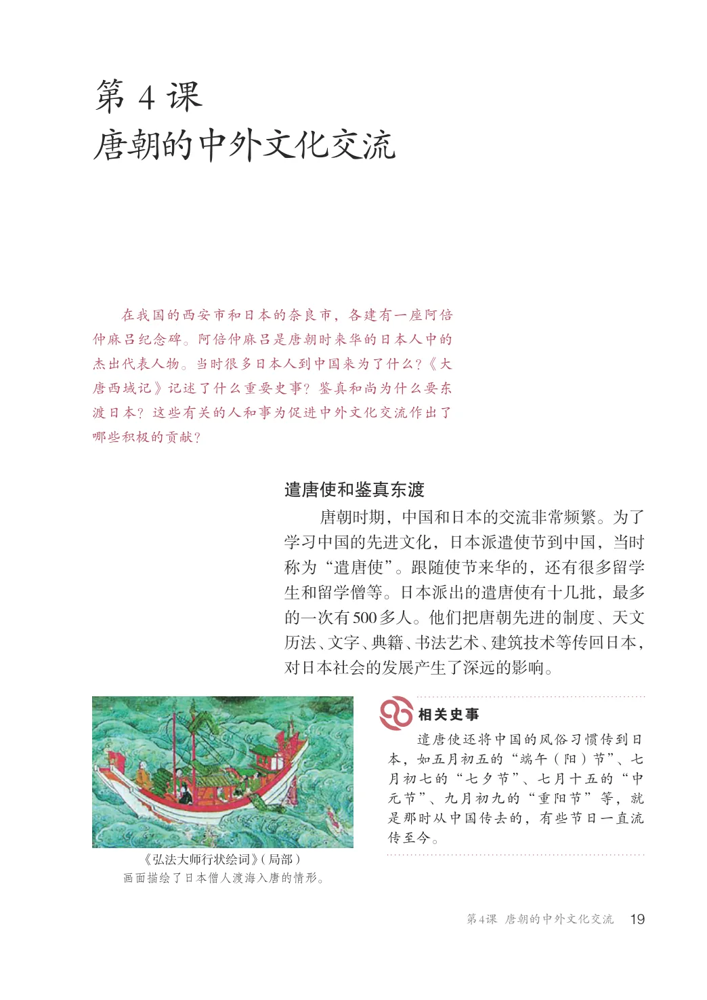
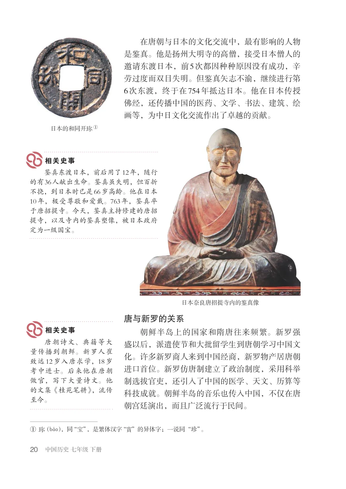
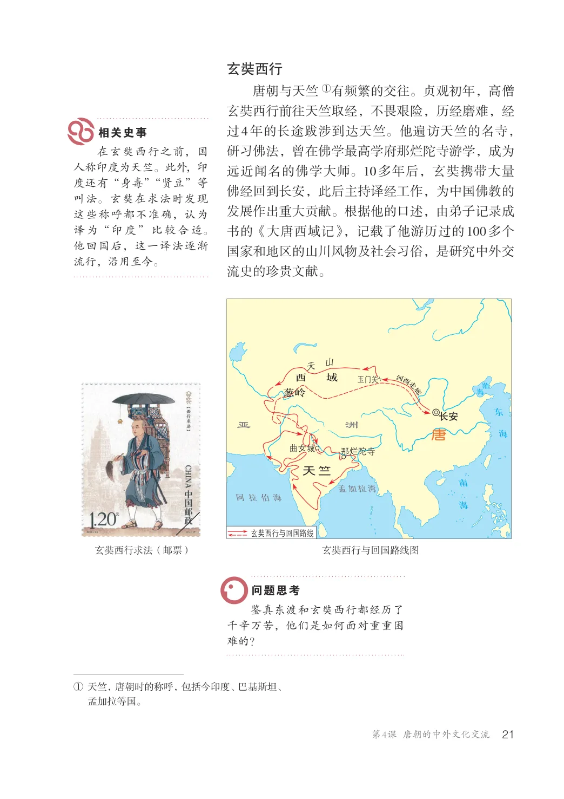
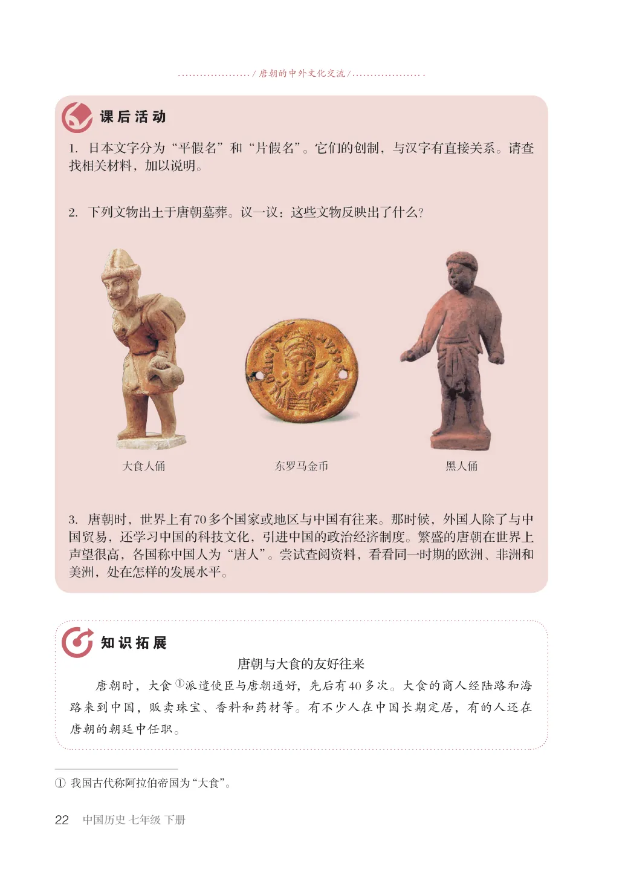

第1单元 · 教材第 19–22 页
第4课 唐朝的中外文化交流
文字版依据教材 PDF 文本层整理；复杂地图、图表及版面关系请以右侧教材原页为准。
在我国的西安市和日本的奈良市，各建有一座阿倍仲麻吕纪念碑。阿倍仲麻吕是唐朝时来华的日本人中的杰出代表人物。当时很多日本人到中国来为了什么？《大唐西域记》记述了什么重要史事？鉴真和尚为什么要东渡日本？这些有关的人和事为促进中外文化交流作出了哪些积极的贡献？
遣唐使和鉴真东渡
唐朝时期，中国和日本的交流非常频繁。为了学习中国的先进文化，日本派遣使节到中国，当时称为“遣唐使”。跟随使节来华的，还有很多留学生和留学僧等。日本派出的遣唐使有十几批，最多的一次有500多人。他们把唐朝先进的制度、天文历法、文字、典籍、书法艺术、建筑技术等传回日本，对日本社会的发展产生了深远的影响。
遣唐使还将中国的风俗习惯传到日本，如五月初五的“端午（阳）节”、七月初七的“七夕节”、七月十五的“中元节”、九月初九的“重阳节”等，就是那时从中国传去的，有些节日一直流传至今。
《弘法大师行状绘词》（局部）画面描绘了日本僧人渡海入唐的情形。

在唐朝与日本的文化交流中，最有影响的人物是鉴真。他是扬州大明寺的高僧，接受日本僧人的邀请东渡日本，前5次都因种种原因没有成功，辛劳过度而双目失明。但鉴真矢志不渝，继续进行第6次东渡，终于在754年抵达日本。他在日本传授佛经，还传播中国的医药、文学、书法、建筑、绘画等，为中日文化交流作出了卓越的贡献。
日本的和同开①
鉴真东渡日本，前后用了12年，随行的有36人献出生命。鉴真虽失明，但百折不挠，到日本时已是66岁高龄。他在日本10年，极受尊敬和爱戴。763年，鉴真卒于唐招提寺。今天，鉴真主持修建的唐招提寺，以及寺内的鉴真塑像，被日本政府定为一级国宝。
日本奈良唐招提寺内的鉴真像
唐与新罗的关系
朝鲜半岛上的国家和隋唐往来频繁。新罗强盛以后，派遣使节和大批留学生到唐朝学习中国文化。许多新罗商人来到中国经商，新罗物产居唐朝进口首位。新罗仿唐制建立了政治制度，采用科举制选拔官吏，还引入了中国的医学、天文、历算等科技成就。朝鲜半岛的音乐也传入中国，不仅在唐朝宫廷演出，而且广泛流行于民间。
唐朝诗文、典籍等大量传播到朝鲜。新罗人崔致远12岁入唐求学，18岁考中进士。后来他在唐朝做官，写下大量诗文。他的文集《桂苑笔耕》，流传至今。
①（bAo），同“宝”，是繁体汉字“”的异体字；一说同“珍”。

玄奘西行
唐朝与天竺①有频繁的交往。贞观初年，高僧玄奘西行前往天竺取经，不畏艰险，历经磨难，经过4年的长途跋涉到达天竺。他遍访天竺的名寺，研习佛法，曾在佛学最高学府那烂陀寺游学，成为远近闻名的佛学大师。10多年后，玄奘携带大量佛经回到长安，此后主持译经工作，为中国佛教的发展作出重大贡献。根据他的口述，由弟子记录成书的《大唐西域记》，记载了他游历过的100多个国家和地区的山川风物及社会习俗，是研究中外交流史的珍贵文献。
在玄奘西行之前，国人称印度为天竺。此外，印度还有“身毒”“贤豆”等叫法。玄奘在求法时发现这些称呼都不准确，认为译为“印度”比较合适。他回国后，这一译法逐渐流行，沿用至今。
西域
玉门关葱岭
亚洲唐
那烂陀寺
天竺
孟加拉湾阿拉伯海
玄奘西行与回国路线
玄奘西行求法（邮票）
玄奘西行与回国路线图
鉴真东渡和玄奘西行都经历了千辛万苦，他们是如何面对重重困难的？
①天竺，唐朝时的称呼，包括今印度、巴基斯坦、
孟加拉等国。

/ 唐朝的中外文化交流/
1．日本文字分为“平假名”和“片假名”。它们的创制，与汉字有直接关系。请查找相关材料，加以说明。
2．下列文物出土于唐朝墓葬。议一议：这些文物反映出了什么？
大食人俑
东罗马金币黑人俑
3．唐朝时，世界上有70多个国家或地区与中国有往来。那时候，外国人除了与中国贸易，还学习中国的科技文化，引进中国的政治经济制度。繁盛的唐朝在世界上声望很高，各国称中国人为“唐人”。尝试查阅资料，看看同一时期的欧洲、非洲和美洲，处在怎样的发展水平。
唐朝与大食的友好往来唐朝时，大食①派遣使臣与唐朝通好，先后有40多次。大食的商人经陆路和海路来到中国，贩卖珠宝、香料和药材等。有不少人在中国长期定居，有的人还在唐朝的朝廷中任职。
①我国古代称阿拉伯帝国为“大食”。
